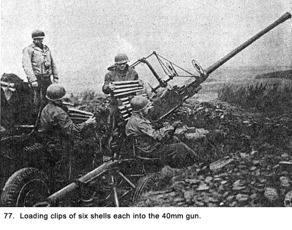
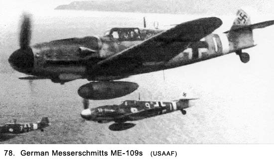
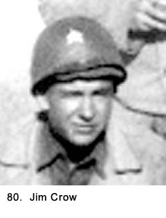
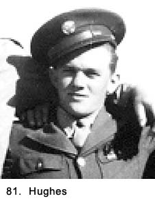
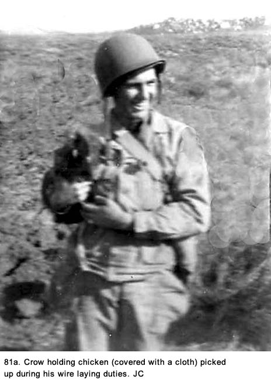
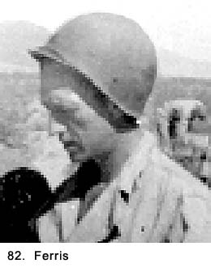
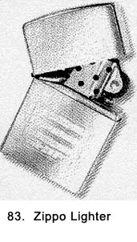
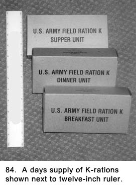
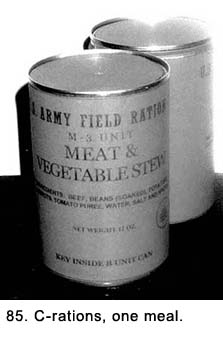
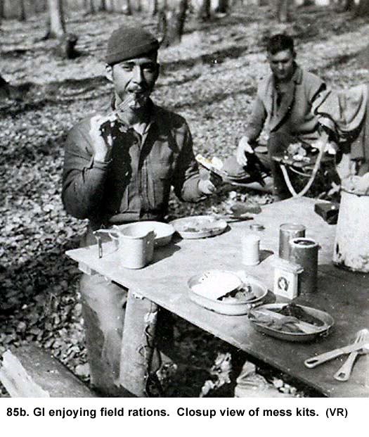

|
Table of Contents < - - - return Chapter 16 < - - - next
World War II Story by Robert F. Gallagher Chapter 15 - Woippy, France No bastard ever won a war by dying for his country. You win the war by making the other poor dumb bastard die for his country. General George S. Patton _______________________ Our next stop was the town of Nancy where we parked our convoy along the rubble-strewn streets. Civilians passed nearby but they gave only casual glances at us. Their mood was dour, and after we sat there doing nothing for about three hours, ours feelings matched theirs. We were not allowed to dismount the trucks and, as usual, nobody told us what was going on. We were surprised we were not setting up our guns to protect some potential target. K-rations were broken out at dusk and we commented how meager and unfulfilling they were. We drank water from our canteens.  Finally, we unloaded, set out guards, and carrying our bedrolls, headed toward one of the less-damaged buildings. Our billet that night was a partially bombed hotel previously used by the German army. With the sun down, we moved among the rooms by flashlight, or "torch light" as the Army called them, looking for a space big enough to spread our sleeping bag and, hopefully, big enough to accommodate a couple of our buddies for company. We laid out our bedrolls on the wooden floors and slept about twenty to a room meant for two or three people. It was more than a little crowded and territorial arguments broke out. We tried to decipher the writing on some empty Germans ration boxes found lying about to determine what kind of food they had been eating. With our little understanding of the German language, the best we could conclude was they were mainly biscuits. Soon after we arrived someone in authority decided we needed showers so we were sent down to the basement where a freezing cold room had nozzles sprouting out of the walls. The water was ice cold so we stayed there only for a minute or so and then raced for towels that were furnished. It was more torture than a refreshing shower, and we did a lot of griping. It did not make us much cleaner because we were not there long enough to do any good. To make matters worse, all our clothing was in our duffel bags back on the trucks so we put on the same dirty clothing we arrived in. Our First Gun Emplacement The next day, we loaded up on our trucks and traveled north. We arrived at our first location for a gun emplacement, the very non-French sounding town of Woippy in the northeast corner of France near the city of Metz. The area, known as Alsace-Lorraine, had been the site of territorial battles between the French and Germans for centuries. More recently, the German army had put up stiff resistance in the Metz area, and it took the Allied Third Army several weeks to capture it prior to our arrival. We saw many castles in the area. Our assignment was to guard a supply depot somewhere in the area against German aircraft. Each gun section was assigned to a prescribed location around the depot. We could not see the depot and were there for several days before we were even given information about what direction it was in. None of the other gun sections in our battalion were visible to us. Using our long-handled shovels, we dug a triangular gun pit twenty-five feet by twenty feet by two-and-a-half feet deep. We manually pushed the 40mm gun into it, extended the side beams, lowered the gun down on the jacks, leveled it, and then built up rows of sand bags filled with the dirt dug out for the pit, about two-and-a-half feet above the natural ground. This made the overall pit five feet deep. We then set metal ammunition boxes around on the bottom of the pit. While we were working on the 40mm pit, the M-51 crew was digging in their weapon about two-hundred feet away. We had arrived at dusk, and it was daybreak the next morning before we were completely set up. We could have fired much earlier than that because, while we were digging in, the gun was sitting up on the ground next to the pit ready to go. At sunup we had a full crew manning the gun and watching for enemy aircraft. Even though nobody had slept during the night, we were all so excited about being at our first combat gun position no one even mentioned sleep. We were all hoping something would happen. We did not have to wait long. At about midmorning, we spotted two planes headed in our general direction from the north at a very low altitude. The loader, Wellington, hustled up on the steel platform and cocked the gun to put a round in the firing chamber (See Fig. 77). The trackers, Bapst and Spearing, were already in their seats making adjustments in aiming the barrel of the gun with their cranks as they picked up the lead plane in their sights. Several men were busy opening the ammunition boxes. It was my job as gunner to make the final decision whether the planes were friend or enemy. My first impression was that they were Germans, but I had to be sure. They made a slight turn, and I picked up a cross on one of their tails and immediately identified them as ME-109 Messerschmitts (See Fig. 78). The gun was on target so I yelled, "Fire!" The loader stepped on a pedal that stuck up from the steel platform about an inch, and the gun started to pump out projectiles at two per second. I was standing on the bottom of the pit behind the loader yelling to the trackers "Ahead, ahead!" which meant they should try and move their sights ahead of the planes. The idea of tracking was to shoot out ahead of the plane and let it fly into the shells. If they aimed directly at a plane, the shell would go behind it. There were two men near me handing up clips of six shells each to the loader, who dropped them into a slot at the top of the gun. Even though the other gun positions in our battalion were not in sight, we could see the tracers from their guns going up. We got off about fifteen rounds, and then the planes were gone. Later, we heard one of them crashed several miles south of where we were, but no one ever knew who got it. Several of our crew thought we had a hit, but I never saw it. Our projectiles would explode on impact, so a hit would usually be quite visible.  The M-51 mount with its four .50-caliber machineguns never got off a shot. The men were so busy cocking their guns, by the time they did shoot, the planes were gone. From that day on, we kept a round of ammunition in the breeches of all the guns, including the 40mm, with just the safety latches on. We were not supposed to, but we did it anyway. After the attack, we ran several drills to make sure everyone knew how to act in an emergency. It had been a number of months since we had practiced and we had been pretty sloppy on our first attempt at the real thing. We learned one important lesson during this first attack. While the tactics of attacking aircraft varied considerably, at that period of the war, enemy planes tended to fly at hedgehopping elevations, hoping to defeat our radar early warning systems and to reduce the time they would be within firing range of light antiaircraft weapons like ours. We realized there would not be much time to get ready to pick up the target and fire our first shot. This was not going to be like target practice in the Mojave Desert, where the target was dragged right across the front of our gun pit at slow speed and a prescribed altitude. If we were going to do any firing we had to be ready to open up at any angle and to do it in a hurry. We discussed this in detail and made sure every man knew how to react. After the attack, the adrenaline was flowing and our mood was edgy. The gunner in the M-51 mount even started tracking some ducks flying over. We were all scanning the horizon for planes, but soon settled down and boredom set in. We learned at this gun site the toughest problems we were going to face were trying to constantly stay alert, watching the sky where almost nothing was happening, and ignoring what was going on around us on the ground. Staying alert was not only hard to do, sometimes it was impossible. There was no way to train men for this idle time, yet it proved to be our most difficult task. Our gun position was in the yard of an industrial plant on the edge of Woippy. We had two six-man pyramid-shaped tents as part of our equipment, but we pitched them only when we had to. It was one of those jobs we avoided whenever we could find a permanent structure to occupy. At this site, we decided to bunk down in the nearby plant, a factory that made wooden barrels before it was shut down as the war swept through this area. We started to set schedules with each crew on duty for six hours and off for six hours. After some experimenting, this was changed to four-hour shifts, which seemed to work better. On our off time we could eat, sleep, or do other things. We were supposed to stay near the gun at all times, but we did a lot of roaming while off duty. On duty, we were at our set positions, scanning the sky for intruders. It was a very tedious job we would experience over and over again as we moved around to different locations in Europe. While in Woippy, our daily activities became completely different from the orderly life we had been accustomed to. While in training and again in England, everything was done at prescribed times. From roll call to taps, we moved on a prescribed timetable set by our leaders. With some variations for special duties, we had known precisely when eating, sleeping, and work would happen. At this first gun position, all this changed. Days merged with nights, breakfast was eaten at noon, and sleeping was done at varying times and durations. As the schedule for any given day became muddled, so would the days of the week and then weeks of the month. Saturday and Sunday had no more significance than any other day of the week. There were no passes or furloughs to look forward to, only more of the same as far as we could see out into the future. Usually, we did not know what day of the week it was without some lengthy concentration on the matter. We had no reason to know, and we could care less. Watches were checked only to determine when gun or guard duties would start or end. Most other activities rotated around those assignments. Despite being in a combat zone, we had to
keep our appearance as neat as possible. Lieutenant Engler came around in a
Jeep and gave us all a little talk on the subject. Like our lecture in Reims,
he dropped General Patton's name a number of times to emphasize the point.
Everyone under Patton's command, including us, was afraid of him. There was
almost no chance we would ever see him, but we were not about to take any
chances. Those of us who had heavy beards shaved almost every day. It was
usually done with cold water using our steel helmet as a basin. For a
mirror, we each had a small piece of polished stainless steel the government
issued along with a shaving kit. Washing our faces and hands was also done
out of the helmet, and later there were attempts to bathe our whole bodies
that way. This bath procedure was called a whore's bath. We had to wear our M-1 helmets every day, all
day long. It came in two parts. The inside piece Our hair got matted down from the weight of the helmet because we could not wash it for weeks at a time. It would hurt to run a comb through it so we just didn't comb our hair. We had to keep our rifle and gas mask with us at all times. We hated the gas mask because it was so big and bulky. It was always getting in the way while we moved about. When we slept, the rifles and gas masks were always alongside us. We realized at this first gun position we were not going to get many inspections from our officers or high-ranking noncoms. Not even Sergeant Kornich, our platoon sergeant, who had been in our face every minute of every day while training in the States and even in England, came around on any regular basis. One of the crew said, " I miss him," but we all knew he was kidding. We liked this independence. The rumor circulated in the States that officers and high-ranking noncoms would become more lenient and even friendlier when we got overseas. This turned out to be false, but their infrequent visits to our gun sections was the next best thing. Our gun-section leader, Bud Dillon, was well liked by the all crewmembers. He knew how to use his authority when he had to, but he also gave us a lot of leeway when we were not on gun duty. His unique talent was his ability to balance being stern when he had to and wanting to be liked at other times. It was not typical behavior of most sergeants. He was tall, very thin, and wore his jet black hair combed straight back. The thin face with a pale complexion gave him a gaunt look. His large black eyes would bulge whenever anything exciting or unusual happened, making him look like a startled deer caught in a car's headlights. The hygiene problem he had back in the States seemed to be corrected. Either that or the rest of us were now putting considerably less emphasis on cleanliness and his condition did not seem all that unusual. Dillon had a high-pitched voice that did not command authority, but the rest of us had been threatened and indoctrinated with the power of rank to the point we would have taken orders from anyone who wore one more stripe than we did. Dillon made a point of raising his voice when officers were around to indicate he was in charge. During those times, we would move around faster than normal and do our best to act as though we were afraid of him. In private, he seldom had to enforce his rank, and we considered him one of the crew. All of us, including him, pitched in and did any kind of duty we had to do. We could have done a lot worse than Dillon, especially compared to men in some of the other gun sections who were living under the same kind of strict rules of authority we had back in the States. Ours was a very democratic gun section, and because of that, there was almost no trouble among us. Most everyone was conscientious, with one exception, and we went about our duties with dispatch. The long training period we had back in the States was paying off. I felt that we were a very good gun crew which needed little discipline. The relaxed atmosphere made the day-to-day grind much easier to tolerable. We took pride in the efficient manner we went about our duties, especially, those related to our artillery. Once we had arrived at a gun emplacement and dug in, two men would take off with a reel of telephone wire. They would each hold the end of six foot-long steel crowbar that ran through the hub of a reel of wire. They would link up a phone at the 40mm gun with another at the M-51 mount. The two men would then move out to find the nearest battery gun position, usually about five-hundred to a thousand feet away. When they came to a road, they either had to go over or under it. Usually they would find two trees on opposite sides of the road, climb them, and string the wire across. Other times, they would find a culvert under the road and thread the wire through it. They became quite proficient at cutting and splicing the wire to make adjustments getting the wire through difficult terrain. On their route, they might find a dozen other wires (some obviously abandoned) from other outfits at the same location. Later in the war, they would splice the abandoned wire they found to their own and wind it on the reel to replace wire which had been lost or abandoned. The same two men, Crow (See Fig. 80 ) and Hughes (See Fig. 81 ), always did that job. They enjoyed the challenge and liked the freedom it gave them to  roam around and see what was going on. The rest of the crew referred to the two of them as our scouts. In this case, however, our scouts were not seeking the enemy but rather looking for places of interest for us to explore later. They always came back with stories about some harrowing or funny experience, some real and some imagined. Once they lost a reel of wire in a river and came back soaking wet from trying to retrieve it. At first they told us they had to swim a river to get to the next gun emplacement, but they were laughing so hard they had to tell us the truth. Another time they claimed to have gotten shot at when they surprised some trigger-happy GIs. When we got into Germany, the stories usually included episodes where they were invited into the home of a couple of beautiful blonde frauleins. At this site, Jim Crow brought back a chicken he had picked up from a farmer’s field while he and Hughes were laying wire. (See Fig. 81a) He gave it to the battery cooks who cleaned, cooked it, and returned some to Crow. There was not enough to go around for all the crewmembers and I did not get any.  As soon as all the wires were in place, we could phone the seven other gun sections and the battery command post (CP) where our headquarters unit was located. The phones came in a heavy tan colored leather case, twelve inches-by-eighteen inches-by four inches, which had a small crank on the outside you turned to ring on to the party line. The five battery headquarters in our battalion communicated with each other by radio. During the day most of the calls came from the CP or from gun sections that had observed something unusual. From sundown to sunup, we had to call in every hour on the hour in order of gun section. My crew would say "Gun number one reporting," then our M-51 crew would say from their telephone, "Machine gun number one reporting," then gun number two, etc. That was the way it was supposed to work. Telephone lines would be cut, and around 0400 or 0500 hours in the morning, things would not go so well. One of the problems was the turret for the M-51 mount had a bucket seat that was all too comfortable. Also, the large steel plates on which the machine guns were mounted on both sides of the gunner greatly reduced one's peripheral vision. It was like being in a cocoon, meaning very difficult to stay alert. When our machine gun crew did not report in sequence, we would yell at them to get their attention. We usually wound up throwing a few stones at the mount in an effort to wake the gunner up. Some of the men in the gun crews liked to tease the clerk at headquarters who was keeping score. They would deliberately report out of sequence, report two at a time, and mumble their responses in an effort to mix him up. The job of taking roll call for eight 40mm guns and eight M-51 mounts that should have taken ten minutes would last half an hour or more. The horseplay was all quite childish, but we had to do something to break up the boredom of sitting or standing around in the middle of the night doing nothing. After an especially bad night, one of the clerks in headquarters reported in frustration to his sergeant, "So bad I don't need a job." For a long time after that, whenever our crewmembers got an unusually unpleasant work detail-a fairly common occurrence-we would look at each other and say, "So bad I don't need a job." That fractured statement, as bad as it was grammatically, somehow condensed in a few words exactly how we felt about many of the things we were doing in the Army. While in Woippy, we slept on our army cots set up on the concrete floor of the barrel factory's office. We laid our sleeping bags on top of our two blankets that served as mattresses. The building wasn't heated but the weather was mild. We would take off our gun belt, helmet, gas mask, jacket and boots and sleep in our clothes. It was about 2200 hours on the second night before any of the crew thought anything about catching some sack time while we were at this location. Some of us who were not on gun duty were just getting into our sleeping bags for the first time when we heard something or someone making noise in the warehouse. We took a fast count and decided it was not one of our crewmembers. All of us who were off duty grabbed our rifles. Le Claire and I went outside and raced around the building to cut the intruder off. There was enough moon to see our way clearly. Three other men took flashlights and went into the factory while a fourth went out to notify the crew on gun duty. There was a large door at the opposite end of the warehouse from where we had our bunks, so Le Claire and I ran toward it. We were about ten feet away when we heard a shot from inside, and the door splintered right in front of us as the bullet passed through. If it had happened a few seconds later, either Le Claire or I would have been hit. We yelled to those inside, and they opened the door. A member of our crew named Stevens had fired the shot. We all took turns yelling at him for the dumb thing he had done. Then, we all went back to bed and decided an animal of some kind probably made the noise. Stevens was the one misfit in our gun crew, although he would have been a misfit anywhere he landed. Back in the States, during our training, I had stumbled upon him in a wooded area when we were camped for a bivouac operation. He was tapping a cigarette into a white powder. Dillon had also observed him doing something similar to a cigarette. It did not take much imagination to conclude he was taking some kind of drug. I had compared notes with Dillon, but we had never told anyone else about it. It explained why he acted so spaced-out. The problem was, why was he always that way? He seemed to have a difficult time doing the simplest things. He was continually being yelled at by some noncom or officer for acting or reacting improperly. We referred to him often as Sad Sack, a name taken from a cartoon character that appeared in Army publications. The name fit Stevens well because the cartoon character could do nothing right, often through his own bumbling but occasionally from just bad luck. Before going into the service, Stevens had lived in Los Angeles. Soon after I met him at Camp Haan and before I really knew him well, he had invited me to spend a weekend pass with him at his mother's house near Hollywood. He spelled out all of the interesting places we would visit, and all the fun we would have. It sounded great to me, and I thought it would be a great way to be introduced to the entertainment spots in the Hollywood area. Soon after leaving camp, I found out this was going to be an unusual weekend pass when Stevens insisted we stop and buy a couple of bottles of whiskey before we arrived at his mother's house. As it turned out, we spent most of the time that weekend sitting at her kitchen table in her dilapidated house, playing cards and drinking straight whiskey from jelly glasses. The house, inside and out, was a mess. They were real hillbillies even though the family had been living in a large metropolitan area for many years. The highlight of the conversation that weekend had to do with the glorious new mattress the mother had bought the week before. It was obviously the biggest thing that had happened to the family in some time. Because I did not like hard liquor, my participation in the whiskey drinking was faking an occasional sip. Stevens and his family could not understand my hesitation in participating in the fun, especially because Calvert was what they considered a good brand of whiskey. Anywhere else it was considered a bar whiskey. That weekend would be the last time we went on pass together. Despite all of his shortcomings, Stevens was always cheerful and he could be good company. He was racked with insecurities and wanted to be accepted more than anything else. He never argued or disagreed with any of the crewmembers. We teased him a lot, and he took it all with a smile, a smile that was contagious. He had an easygoing personality and we all liked him. Most of the time his bumbling was so comical it made us laugh, but at other times it was frustrating. However, if we had been a real line outfit where his participation would have been more critical, I am not sure we would have felt the same. Soon after the shooting incident, Dillon and I discussed his questionable competence while he was alone on guard duty, but, again, we never took any action. He continued to pull that duty along with the rest of us. Before we fell asleep on that second night in Woippy, Thomas came in from the gun pit.. He and the others had just been informed over the phone that two soldiers in our battery had died. They had found some alcohol somewhere near their gun position and used it to spike their drinks. They had assumed it was grain alcohol as used in spirits but it turned out to be wood alcohol, which is highly poisonous. One of the two was a fellow named Ferris (See Fig. 82) who had been in our gun section at one time in the States. We remembered he had a wife and we wondered how the Army would describe his death to her. Would they tell her he died in the line of duty? If not that, at least they could give the generic reason; he died in the service of his country. Just a few kind words, even if they were a lie, would make a big difference to his family and friends. We all liked Ferris, and we felt bad about what had happened to him and the other soldier. The next few days were quite uneventful. We had little to do. It was increasingly difficult to stay alert, sitting and standing at our gun positions, watching for enemy planes. While we had enough men to man the equipment, it was difficult to always have the best man at a given assignment. We partially solved this problem by having those who were off duty and not sleeping spend most of their time hanging around the gun pit in case they were needed. During the night, the men who smoked would sit on the floor of the gun-pit and cup their hands around the lit end of their cigarette. We made the first smoker, on a specific shift go back into the warehouse to light up so the two-inch flame from their Zippo lighter (See Fig. 83) could not be seen. It was like a small torch that could be seen from a great distance. We had been warned that there could be snipers about and, even though we did not think there was much chance of one being in this area, we were not going to take any chances. After that, each successive smoker would light his cigarette by pressing it against the lit end of the first man's cigarette as both of them cupped the lighted ends. One afternoon we noticed a civilian burning papers in an open field about one-hundred yards from us. He had a German Shepherd dog with him. It was one of the few dogs we would see in Europe. Dillon and I started over to see what he was doing. We put a round of ammunition in the firing chambers of our rifles and carried them out in front of us instead of slung up and over our shoulders like we normally did. The dog was not on a leash, and we weren't going to let it intimidate us. As we approached the man, he started walking back toward a house with the dog following. We picked up a couple of pieces of paper that had not burned yet, and they had swastikas on them. We concluded the man was either a Nazi or a Nazi sympathizer who was burning the papers to keep from being caught with them in his possession. About that time, a Jeep pulled up with three GIs in it. There was another civilian near the Jeep, pointing to the man who had burned the papers. He said something to the men in the Jeep. A lieutenant and a staff sergeant got out of the Jeep and without saying a word, pulled out .45 caliber pistols. The lieutenant shot the dog and the sergeant pointed his gun at the man. They loaded the man back in the Jeep, and took off. We were left with a lot of questions and no answers. It would not be the last time that this lack of information would plague us. Rations Become Our Main Staple Our food the first three days in Woippy consisted entirely of C-rations, and we were getting very sick of them. We made Stevens the cook. We figured it would be hard for him to screw up that detail, and it would give him less time on gun duty where he could cause real trouble. So far, cooking at this location consisted of filling an empty ammunition can about half full of water. The can was about two feet square and three feet high. He then built a fire to heat the water we would use to warm the contents of the cans. He even goofed that up. Grimes and I decided to chop some wood for him to use in making fires while we were at this site. The warehouse was full of wooden staves used to manufacture barrels, so there was a ready supply available. We carried armfuls out into the yard and, using long-handled axes, chopped each piece in two. We then took the pieces and threw them through a window into the warehouse where Stevens was building the fire. After we had chopped enough wood to last a week, we went inside to see how Stevens was doing. He had a fire going that stretched for twenty feet across a concrete wall and was in the process of burning everything we had given him. He now had two cans of water heating; one for warming the ration cans and the other for bathing, but he could have heated a dozen more with the fire he had going. Again, we yelled at him and were reminded you had to explain everything to him in detail. Stevens bumbled his way through the entire war. Meals were provided a number of different ways while the war was in progress. When we were traveling in convoy and often while in gun positions, we were given packaged food that was known as rations. There were four types, but K and C were the ones we had the most. The K-rations meal came in a small OD-colored cardboard box covered with a heavy coating of wax, and the same shape only about twice the size of a box of Crackerjack (See Fig. 84). The package was designed to be sturdy and lightweight. Each man received three boxes for a day's ration, marked breakfast, dinner, and supper. They were designed to supply the required daily nourishment, but most of us were still hungry after eating them. The three meals varied somewhat, but there were common items in each. Each contained a small can (slightly smaller than a can of tuna), a fig bar (called a fruit bar but they all tasted like figs to us, so that's what we called them), or a chocolate bar, crackers (also misnamed as biscuits), four cigarettes in a little cardboard box, a small packet of toilet paper, a paper packet of dried lemon powder or dried coffee with sugar to make a drink, one stick of chewing gum, water purification tablets or salt tablets, and a wooden spoon. The can usually contained scrambled eggs and ham bits for breakfast, processed American cheese or American cheese and bacon for dinner, and some kind of chopped meat, like pork or beef mixed with something else, for supper. We called the chopped meat course Spam, but in reality it was not. Spam was another product. Rarely was there any variance from this menu, but, very late in the war, there were some changes in the canned products. Sometimes, we wound up with more of one kind than another. The fig bar came in handy as a laxative when there were too many rations with cheese as the main staple. Because there was such a limited variety, even if we got the three different kinds in one day, we got tired of K-rations in a hurry. They tasted the best when certain conditions were met. First, we were very, very hungry; second, we had hot water to heat the can before opening it, and third, there was also hot water available to make coffee for those who liked it. Most of us young fellows did not like coffee and gave the packets to those who did. I would often exchange my cigarette packets for a chocolate bar and there were other exchanges made. Probably the best description of a K-ration came from Armbruster, who said, "They only taste good when you're too hungry to care." C-rations consisted of two cans, about two-thirds the size of a Campbell's Soup can for each meal for a total of six cans per day (See Fig. 85). It was a larger amount of food than the K-rations, but still only marginally filling. The C-cans also were OD in color. For each meal, one of the two cans contained either scrambled eggs with potatoes, vegetables with stew, spaghetti, vegetables with hash, or pork and beans. Late in the war, they came out with some different varieties such as mixtures of ham and lima beans or potatoes, eggs, and ham. We always ate these rations out of the can with our mess kit spoon. The other can contained a fig bar or a chocolate bar, crackers, four cigarettes, toilet paper, and a paper packet of dried coffee or lemon powder. We ate a lot of K and C rations, mostly C, that were designed to be eaten hot or cold. As a general rule, we had K-rations while traveling in convoys and C-rations when at a gun emplacement, but there were some variances. D-rations were about the size of a small Mars candy bar and weighed four ounces. Fortunately, we were exposed to them only on a limited basis. It was nothing more than an enriched chocolate bar that held up in hot weather. It was used only when absolutely necessary because it created intense grumbling among the troops. It was suppose to be high in calories and packed with vitamins. There was just one per meal, and, even though it tasted good going down, it left you very hungry after eating it. 10-in-1 rations came in a cardboard box approximately one foot by two feet by three feet. One box was designed to include food to feed ten men for one day, and there were five different menus. Because of its size, the ration was not carried by troops in their field packs. It was carried by trucks and used primarily in battery field kitchens. It was mostly cans of meat and vegetables but it had some goodies, as we called them, such as date nut cake in cans, fruit cocktail, candy, and cigarettes. As a gun section, we were never issued these rations directly. We picked up a lot of them at one of our gun positions in Germany when a searchlight outfit left them behind. To us, the goodies were a nice supplement to our rations. Although we carried the full boxes of ration with us for some time, we finally realized we did not have the proper kitchen utensils to properly prepare the meat and vegetable items. When we were not on K, C or D rations, the
battery cooks would prepare food on field stoves when they could, but this
did not happen often. We were always moving around and did not stay in one
site long enough for them to set up their portable kitchen. An even bigger
problem for them was trying to locate the Ordinance Department and get the
supplies they needed from them. They often used 10-in-1 rations to prepare
or supplement meals when outside sources were not available. When things did
work out, our battery cooks would deliver the finished product to the gun
crews and serve us from the back of a truck. The hot food was kept in
ten-gallon insulated buckets and was usually lukewarm when we got it. Where
you were in the chain of eight gun sections determined the quantity and
degree of heat of the food you received (See Fig. 85b).  After about four days in Woippy, we were promised a hot meal from the cooks in our battery headquarters. Just before they arrived, Grimes informed me he had lost his mess kit. He was always losing something. He was a nice guy and one of my best friends, but he could get on my nerves because of his antics and his cavalier attitude. The aluminum mess kit came in two parts, so I loaned him half of mine, along with a knife and spoon. The chow truck showed up after dark. It was a meal we were all looking forward to because the rations we had been eating were not fulfilling. There were heavy clouds, so we could not see very well in the near-total blackness. The cooks knelt at the back end of the truck bed and scooped the food out of the containers into our mess kits as we stood on the ground. They used flashlights to see what they were doing. The menu that night was a pork chop, mashed potatoes, gravy, creamed corn, bread, butterscotch pudding, and coffee. The half of the mess kit I had left after giving Grimes half was a pan that was about twelve inches long by eight inches wide with rounded corners. It was about one inch deep, and there were no partitions. Everything served by the cooks went in right on top of everything else, no matter how I tried to position the kit when being served. Caught on the fly might be a better description. I was on duty at the gun so after receiving my meal I sat on one of the tracking seats and tried to figure out what was in my mess kit sitting on my lap without being able to see it. It might have been a mixture of the gravy and the butterscotch pudding, but whatever it was, the meal tasted terrible. After taking several forks full, I pulled the pork chop out from under everything else with my fingers, figuring at least I could enjoy the meat portion. I bit into it and wound up with a mouthful of fat with just a little bit of meat. It turned out there was a half-inch layer of fat along the edge of the chop and the meat I tasted was as tough as shoe leather. I threw the meal out and headed over to the barrel factory to find a C-ration. I had some unkind words to say to Grimes and told him he had better find his own mess kit. He did find it, but it really didn't make much difference because we went back on rations. Our gun was situated about fifty yards from a dirt road that lead into the nearby town. Just beyond the road was a stone fence about four feet high. On several evenings, just before dark, we observed someone peeking out from behind it, near where it ended. We wondered who it was and what his intentions were. It was making us nervous, so we decided to do something about it. Someone suggested putting a round of 40mm into the fence to scare him away. The machine gun crew, who by this time was still lamenting the fact they had not fired a single shot in combat, wanted to spray the end of the wall with their guns. Finally, we decided to send three men over to check it out. They went and came out from behind the wall with three very scared boys in their early teens who were just being inquisitive. We were sure glad we had not done any firing. We gave them a lecture, but their grasp of the English language was about as good as ours was of French. I'm sure they did not understand us, but they did know we were upset with them. They probably thought we were going to punish them because they looked startled when we gave each of them candy before they left. As they walked back toward the village, they kept turning around and waving at us. Out To Explore A French Village When Sunday came, the church bells started to ring in Woippy. We figured it probably was a Catholic church, so Bernal, Le Claire, and I headed over there to go to mass. We knew it would give us a good opportunity to snoop around the town. As we entered the town, we realized it was a very quaint French community. We walked down what appeared to be the main street with small shops lining both sides. The cobblestone street was narrow, and the shopping area was only two blocks long. We were not sure if the shops were closed because it was Sunday or if they were no longer in business. We looked in several of them, and there did not seem to be anything for sale inside. The town's structures had some war damage, but not too much. As we approached the church at the far end of the business district, we saw the local people were not headed toward it but rather to a garage across the street where mass was being held. We looked up at the roof of the church and saw a big hole in it. We nodded and smiled at the civilians, but they were not a bit friendly. Hadn't our Army liberated these people from German occupation? Maybe they'd gotten over being grateful, they could at least have been friendly; smiled at us or made eye contact. We began to refer to the French civilians as Frogs. Whenever we were down on someone, we always used the derogatory name. The British soldiers had become Limeys instead of Brits when we were at Camp Stapley, and later, the Germans would be Krauts, Huns or Nazis depending on how we felt about them at the time. We moved into the garage with the civilians and stood against a sidewall about half way toward the front. Most of the people were standing; the few chairs were only for the elderly. The place was very crowded, and we were the only soldiers. We tried to look inconspicuous, but it was no use. We were balancing a rifle, gas mask, bayonet, and steel helmet, and we each had a bandoleer of ammunition. The bandoleer was a cloth strip that hung around the neck and it looped down in front of the chest where there were ten pockets. Each pockets held a clip of eight rounds of rifle ammunition. At the consecration of the mass, we all got down on one knee with our arms propped up on the other knee. I was holding my steel helmet in one hand and the bulky gas mask kept getting in the way of my movements. When the altar boy rang the bells, I dropped my head and was staring down at the rifle between my legs. What an uncomfortable situation to be in. There were a couple nuns with their wing like swooping headgear on the other side of the room. I made a point of not looking in their direction. I would not have liked to admit it to myself, but I was still somewhat in awe of them after being exposed to their strict discipline during my eight years of grammar school. If they had come over to me in this makeshift church and said, "This will go on your permanent record," I would not have been surprised. From the dirty looks that we were getting from some of the civilians, we figured this town was either pro-German or did not like armed soldiers in their makeshift church. With the town being in Alsace-Lorraine, the people could have been more German than French, which would explain the man who was burning German papers earlier. There was also the other possibility the American Army had shelled the town when the Germans were there, which could have accounted for the hole in the church roof. After mass we stood out in front of the garage waiting for the priest to come out. We figured he might speak English and we could talk with him. He came out with the two altar boys each holding large candles in one hand while cupping their other in front of the candle flame. We gave the priest a big, "Hi, Father!" He took a turn and walked right by us without saying a word. We ran through a half-dozen reasons why he shunned us, but we really had no idea what it was. Was he, too, pro-German? We thought again about who had caused the bomb damage to his church. Many years later, I felt I had the answer, and it was not nearly as mysterious as we speculated at the time. When the incident occurred, the priest was carrying blessed hosts for Holy Communion back to the church, and by church law he was not supposed to talk to anyone. On the way back to the gun pit, we passed an old man pulling a cart who was headed into town. By this time, we had stopped nodding at civilians, so we were surprised when he gave us a big "Bon jour!" and we responded in kind. On March 18, we got the command, "March Order," over the phone. This meant we were to load up and get ready to move out. We emptied the sand bags, stacked them in piles, and loaded them on the two trucks to be used again at the next gun position. The director and power plant took six men each to lift onto the truck bed. All the remaining equipment was positioned to allow as much room as possible for the crew. The telephone wire crew returned after gathering up most of what they had strung when we first arrived. We raised the gun to its wheels, pulled it out of the pit, covered it with the canvas tarpaulin, snapped the canvas into place, and attached the draw bar to the two-and-a-half ton truck. The machine gun crew hooked the M-51 mount up to the other truck. As the final step, the fifteen men of the crew loaded up. A Jeep came by and led us to the site where our battalion was forming into a convoy. We headed north into Luxembourg. All Jeeps in our convoy had been outfitted with a steel bar welded to the front bumper and extended vertically to a height above the top of the windshield. Near the top of the bar, at the front, was a notch that was filed to a sharp edge. The Germans were stretching wires across roads as they retreated to decapitate GIs riding in open Jeeps. The bar with the hook was a makeshift method of cutting the wire before it could harm passengers. On the convoy to Luxembourg, we learned one reason we were not supposed to keep a round of ammunition in the firing chamber of the 40mm gun. There were some anxious moments-actually, it was more like an hour-as we drove along thinking we had forgotten to take the round out of the gun's breech before we left Woippy. Was the next bump we hit going to set it off? Following directly behind us in the convoy, and in line with the barrel of the gun, was the truck carrying our machine gun crew and pulling the M-51 mount. If the 40mm did go off, they would be wiped out. Nobody could remember removing the round, and it was some time before we realized Grimes, who was up in the cab of the truck, may have done so. We were quite relieved when the convoy stopped so we could talk to him. He had indeed taken the shell out and we all let out a sigh of relief. We also saw parts of the Maginot Line, the French fortification built along the French-German border to stop the Germans from invading their country. As it turned out, the Germans just went around it. The failure of this system showed the folly of building fixed fortifications to restrain mobile armored units such as Hitler's Panzer divisions. Chapter 16 < - - - next Table of Contents < - - - return
Footnotes and Source of Photographs. Copyright, Robert F. Gallagher, 1999 - 2015, all rights reserved on all images and content.
|
 was called a liner and was
made of a laminated impregnated fabric with a resin base. Inside the liner
was a sweatband and cloth strips across the top. The liner was formed to fit
tightly inside a steel helmet (See Fig. 79). The cloth straps in the liner
rested on the top of our heads and carried the weight of the helmet. There
was a chinstrap on the steel shell everyone kept tied across the back of the
helmet. It was meant to be worn under the chin to keep the helmet from
falling off but we had been warned an enemy could easily come up from
behind, pull the helmet back, and strangle us with it.
was called a liner and was
made of a laminated impregnated fabric with a resin base. Inside the liner
was a sweatband and cloth strips across the top. The liner was formed to fit
tightly inside a steel helmet (See Fig. 79). The cloth straps in the liner
rested on the top of our heads and carried the weight of the helmet. There
was a chinstrap on the steel shell everyone kept tied across the back of the
helmet. It was meant to be worn under the chin to keep the helmet from
falling off but we had been warned an enemy could easily come up from
behind, pull the helmet back, and strangle us with it.